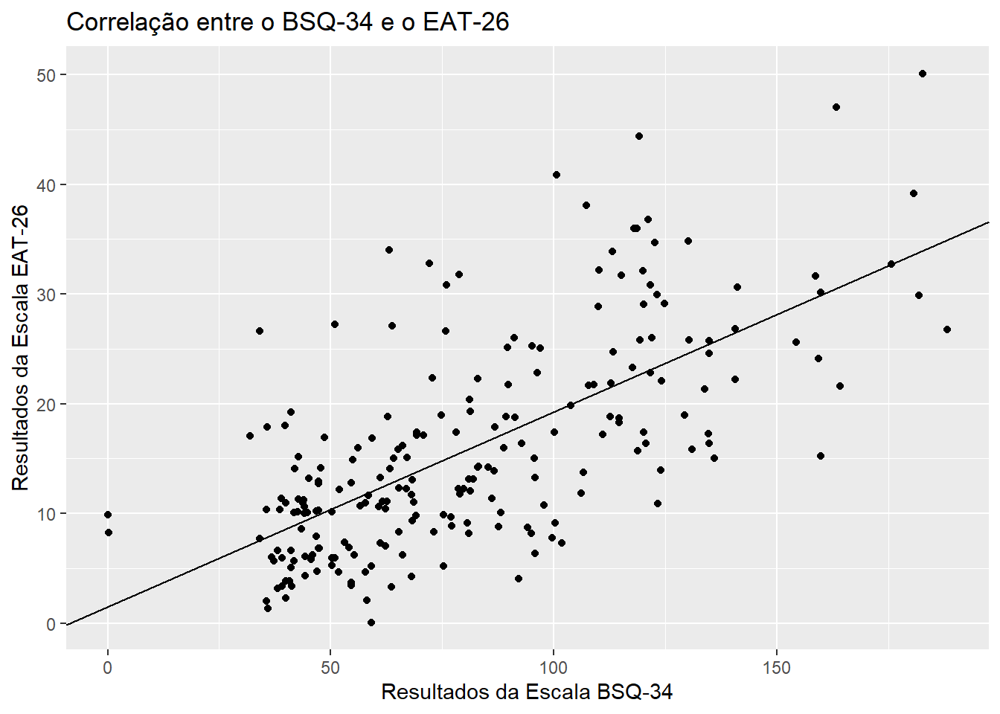

Capítulo 9 Modelo linear misto
Objetivos do capítulo
1. Apresentar a ANOVA de Medidas Repetidas.
2. Realizar passo-a-passo a modelagem analítica.
3. Verificar os pressupostos e implementar as correções sugeridas.
4. Escrever os resultados.
O modelo linear misto (LMM) é um modelo linear, frequentemente utilizado para trabalhar dados longitudinais ou de medidas repetidas, que possibilita definir tanto parâmetros populacionais (efeitos fixos), como coeficientes individuais (efeitos aleatórios), além do erro experimental. Pragmaticamente, este modelo oferece mais flexibildiade à ANOVA de medidas repetidas e sua utilização vem ganhando mais espaço em Psicologia (Gueorguieva and Krystal 2004).
É importante atentar que os efeitos fixos são compatilhados por todos os indivíduos, enquanto os aleatórios são especificos de cada um dos participantes. Com isso, cada indivíduo tem a sua própria trajetória média (tanto intercepto como inclinação) e um subconjunto dos parâmetros de regressão são tomados como aleatórios.
A tabela a seguir compara a ANOVA de medidas repetidas e o LMM
| Característica | ANOVA (MR) | Modelo Linear Misto |
|---|---|---|
| Sujeitos medidos em vários momentos | Sim | Sim |
| Dados completos em todos os segmentos | Sim | Não |
| Estimativas de tendências individuais | Não | Sim |
| Covariáveis tempo-depenentes | Não | Sim |
| Complexidade computacional | Baixa | Alta |
9.1 Pesquisa
A esse momento, vamos ter como referência de análise a pesquisa intitulada “Avaliação psicométrica em português do indicador de dor crônica de Helsinki em cães com sinais crônicos de osteoartrite”, que tem como primeira autora Lídia Matsubara e eu sou co-autor. Essa pesquisa foi previamente utilizada no capítulo de ANOVA de medidas repetidas.
Nessa pesquisa, temos um grupo controle e um grupo experimental e todos os participantes foram avaliados em 5 momentos diferentes do tempo: 1 semana antes do início do tratamento (W2), imediatamente antes (W0), duas semanas e quatro semanas após o tratamento ter iniciado (S2 e s4) e após uma semana da retirada do tratamento (s6). Dessa forma, trata-se de um delineamento 2x5, considerando os 2 grupos e as 5 medições ao longo do tempo. A base dados reúne as varáveis da pesquisa em formato largo (wide) Entretanto, o formato longo é o mais tipicamente encontrado para análises longitudinais e, por isso, será imeplementado a seguir.
tratamento <- dados %>%
mutate(id = row_number()) %>%
select(id, grupo_dummy,starts_with("total_")) %>%
pivot_longer(-c(id,grupo_dummy),
names_to = "tempo",
values_to= "resultado") %>%
rename(grupo = grupo_dummy) %>%
filter(grupo < 3) %>%
mutate(grupo = factor(if_else(grupo == 1, "Placebo", "Experimental"))) %>%
mutate(tempo = factor(case_when(
tempo == "total_w4" ~ "antes",
tempo == "total_w0" ~ "no_dia",
tempo == "total_s2" ~ "semana_2",
tempo == "total_s4" ~ "semana_4",
tempo == "total_s6" ~ "semana_6",
)))As variávies neste conjunto de dados são:
## [1] "id" "grupo" "tempo" "resultado"Dessa forma:
id refere-se a uma identificação única de cada participante.
grupo refere-se ao grupo em que o participante foi alocado, tal como previamente apresentado (controle ou experimental).
tempo diz respeito aos 5 pontos de medida e
resultado é uma variável aleatória contínua do valor obtido na escala utilizada.
9.2 execução no R
A modelagem será feita via LMM. O pacote lme4 e seu complemento lmerTest serão utilizados.
## Loading required package: Matrix##
## Attaching package: 'Matrix'## The following objects are masked from 'package:tidyr':
##
## expand, pack, unpack## Warning: package 'lmerTest' was built under R version 4.0.2##
## Attaching package: 'lmerTest'## The following object is masked from 'package:lme4':
##
## lmer## The following object is masked from 'package:stats':
##
## stepA estrutura computacional agora permite incluir tanto efeitos fixos como aleatórios. Quando eles são definidos como correlacionados, se utiliza uma barra verticail (|); quando descorrelacionados, duas barras verticais (||) são utilizadas. Nesta pesquisa, pode-se entender que cada participante tem seu próprio intercepto, ou seja, seu próprio valor de início. A sintaxe a seguinte específica o modelo e o armazena sob nome de mod_lme.
Repare que esse modelo é composto pelo se seguintes componentes:
1. efeito fixo do tempo
2. efeito fixo do grupo,
3. efeito fixo da interação tempo x grupo
4. efeito aleatório do id, indicando um intercepto aleatório e específico por participante
A visualização dessa modelagem é bastante útil para compreender o que significa a ideia de intercepto aleatório.
ggplot(tratamento, aes(x=tempo, y=resultado, group=id, color=id, linetype=grupo)) +
geom_line(size=1) +
geom_hline(yintercept = mean(tratamento$resultado[tratamento$tempo == "antes"]), linetype="dashed") +
annotate(geom = "text", x=0.5, y = mean(tratamento$resultado[tratamento$tempo == "antes"])+1, label = "Média",hjust = 0)
Repare que cada participante (id) inicia em um ponto específico e tem uma trajetória específica no decorrer do tratamento. O valor médio antes do tratamento está apresentado pela linha pontilhada. Apesar de informativo, esse gráfico tem pouca aplicação pedagógica e, por isso, não deve ser relatado.
Uma vez que o modelo já foi criado, agora é necessário recuperar seus resultados. É importante notar que O pressuposto da normalidade é necessário e ele já foi acessado (e aceito) anteriormente. Conforme dito ao início do capítulo, O LMM relaxa o pressuposto esfericidadde e, por consequência, também o da homogeneidade (Quené and Bergh 2004).
Inicialmente, a anova permite uma visualização de todos os coeficientes do modelo. Isso é importante para verificar cada um dos preditores estipulados e sua significância. A interpretação dos resultados é similar à realizada em modelos de regressão e totalmente convergente ao resultado obtido na ANOVA. Novamente, a leitura da tabela deve começar pela interação.
| Sum Sq | Mean Sq | NumDF | DenDF | F value | Pr(>F) | |
|---|---|---|---|---|---|---|
| tempo | 146.9 | 36.72 | 4 | 152 | 3.304 | 0.01254 |
| grupo | 7.851 | 7.851 | 1 | 38 | 0.7063 | 0.4059 |
| tempo:grupo | 30.95 | 7.738 | 4 | 152 | 0.6962 | 0.5957 |
Verifique que a tabela apresenta três os resultados: tempo x grupo, grupo e tempo. A técnica de Satterthwaite’s method é utilizada para corrigir os valores do grau de liberdade e, consequentemente, os valores de p. Os resultados são virtualmente identicos aos obtidos pela ANOVA, com a diferença que os graus de liberdade do numerador de do denominador não foram corrigidos.
Para obter as informações completas do modelo, é necessário solicitar o summary. Essa função retorna 4 informações calculadas: Scaled residuals, Random effects, Fixed effects e Correlation of Fixed Effect e serve para aprofundar a interpretação dos resultados. Uma particular diferença entre esse relatório e o da ANOVA de Medidas Repetidas é o np2, que não faz parte do LMM.
## Linear mixed model fit by REML. t-tests use Satterthwaite's method [
## lmerModLmerTest]
## Formula: resultado ~ tempo * grupo + (1 | id)
## Data: tratamento
##
## REML criterion at convergence: 1137.5
##
## Scaled residuals:
## Min 1Q Median 3Q Max
## -2.4365 -0.4386 -0.0476 0.4571 3.8758
##
## Random effects:
## Groups Name Variance Std.Dev.
## id (Intercept) 38.77 6.227
## Residual 11.11 3.334
## Number of obs: 200, groups: id, 40
##
## Fixed effects:
## Estimate Std. Error df t value Pr(>|t|)
## (Intercept) 15.10526 1.62039 55.61796 9.322 5.83e-13 ***
## tempono_dia 0.84211 1.08166 152.00000 0.779 0.437
## temposemana_2 -0.21053 1.08166 152.00000 -0.195 0.846
## temposemana_4 -1.10526 1.08166 152.00000 -1.022 0.308
## temposemana_6 -1.00000 1.08166 152.00000 -0.925 0.357
## grupoPlacebo 2.60902 2.23636 55.61796 1.167 0.248
## tempono_dia:grupoPlacebo -1.17544 1.49284 152.00000 -0.787 0.432
## temposemana_2:grupoPlacebo -1.12281 1.49284 152.00000 -0.752 0.453
## temposemana_4:grupoPlacebo -2.13283 1.49284 152.00000 -1.429 0.155
## temposemana_6:grupoPlacebo -0.09524 1.49284 152.00000 -0.064 0.949
## ---
## Signif. codes: 0 '***' 0.001 '**' 0.01 '*' 0.05 '.' 0.1 ' ' 1
##
## Correlation of Fixed Effects:
## (Intr) tmpn_d tmps_2 tmps_4 tmps_6 grpPlc tmp_:P tm_2:P tm_4:P
## tempono_dia -0.334
## temposemn_2 -0.334 0.500
## temposemn_4 -0.334 0.500 0.500
## temposemn_6 -0.334 0.500 0.500 0.500
## grupoPlaceb -0.725 0.242 0.242 0.242 0.242
## tmpn_d:grpP 0.242 -0.725 -0.362 -0.362 -0.362 -0.334
## tmpsmn_2:gP 0.242 -0.362 -0.725 -0.362 -0.362 -0.334 0.500
## tmpsmn_4:gP 0.242 -0.362 -0.362 -0.725 -0.362 -0.334 0.500 0.500
## tmpsmn_6:gP 0.242 -0.362 -0.362 -0.362 -0.725 -0.334 0.500 0.500 0.500Como escrever os resultados
Os dados foram analisados através de um Modelo Linear de Efeitos Mistos, que verificou o efeito do tempo, do grupo, a interação entre esses dois preditores e permitiu um intercepto aleatório para cada participante. Dessa maneira, esse modelo levou em consideração tanto efeitos fixos quanto aleatórios, além de relaxar alguns pressupostos tradicionais dos modelos de regressão. Os resultados permitem concluir que Não há interação significativa tempo x grupo (F(4, 152 = 0.696), p = 0.696), bem como não há efeito significativo do grupo (F(1, 38 = 0.706), p = 0.706). Em outra direção, o efeito o tempo foi significativo (F(4, 152 = 3.304), p = 0.013)
9.3 Resumo
- O Modelo Linear de Efeitos Mistos (LMM) oferece maior versatilidade à ANOVA de medidas repetidas
- A ANOVA tem como pressuposto Normalidade e Esfericidade, enquanto o LMM apenas Normalidade dos resíduos
- Os resultados frequentemente encontrados em ambos os modelos vão na mesma direção
- A implementação computacional é mais trabalhosa
- A escrita apresenta algumas particularidades relacionadas à cada modelo.
References
Gueorguieva, Ralitza, and John H. Krystal. 2004. “Move over ANOVA.” Archives of General Psychiatry 61 (3): 310. https://doi.org/10.1001/archpsyc.61.3.310.
Quené, Hugo, and Huub van den Bergh. 2004. “On Multi-Level Modeling of Data from Repeated Measures Designs: A Tutorial.” Speech Communication 43 (1-2): 103–21. https://doi.org/10.1016/j.specom.2004.02.004.